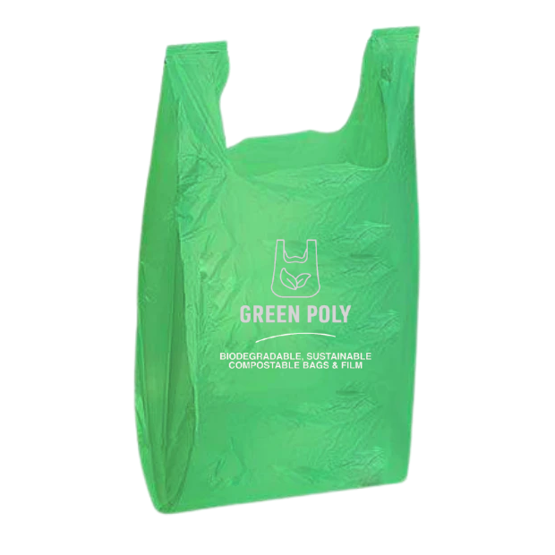

Compostable U-Cut Carry Bags
Our compostable U-Cut carry bags are eco-friendly, durable, and designed to replace traditional plastic bags. Perfect for groceries, retail, and everyday use while reducing environmental impact.
| Size (W x L, inches) | Thickness (micron) | Capacity |
|---|---|---|
| 8 x 10 | 30 | 500 gm |
| 10 x 14 | 30 | 1 kg |
| 13 x 16 | 35 | 3 kg |
| 16 x 20 | 35 | 5 kg |
| 20 x 24 | 40 | 10 kg |